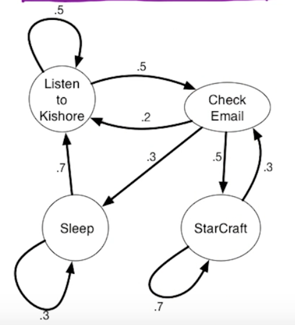
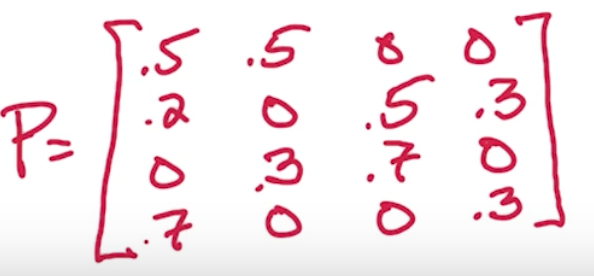
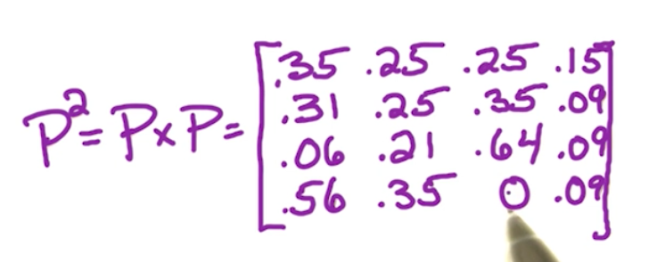
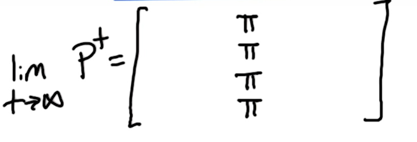
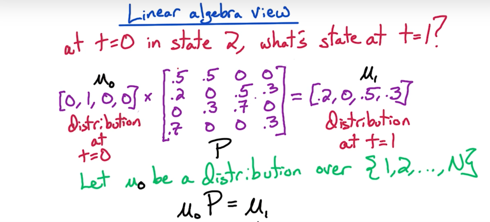
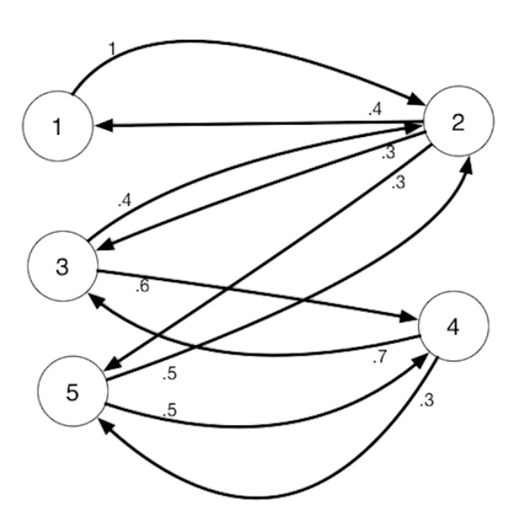
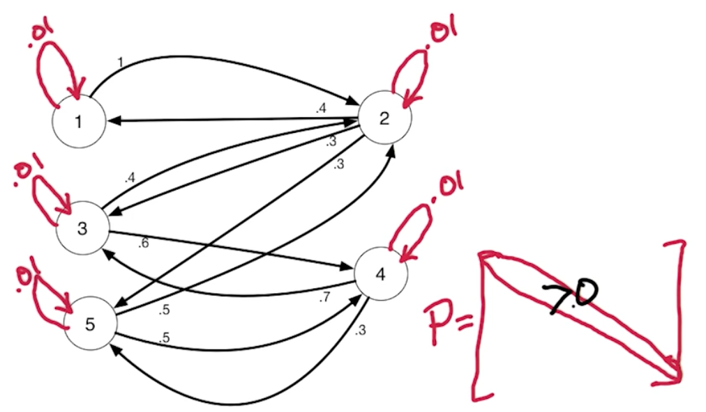

Introduction
Markov Chains (wiki): a stochastic model describing a sequence of possible events in which the probability of each event depends only on the state attained in the previous event.
This model can be represented by a connected directed graph, edge' weight is the probability to shift to next state (vertex) from the current state (vertex)
Time is discrete, each time is one move

The sum of out edge on a vertex is 1
Matrix representation of the graph, it is also called transition matrix, P(i,j) = Pr(i->j) = Pr (next = j | current = i)

Properties of the transition matrix
- P is a stochastic matrix: each row's sum = 1 (If column's sum is also 1, then P is a doubly stochastic)
- N-step transition: P^N is the distribution after moving N steps (N time)
e.g. 2-step P^2. P^2(check-email -> star-craft) = P^2(2, 3) = 0.35 = 0.5 * 0.7
 - Infinite Time: when P becomes larger and larger, P^N converage (unchanged) and row are the same. It means no matter where you start, the probability of ending at a state is same.

π is a stationary distribution - π is an eigenvector with eigenvalue = 1
distribution at (t) * P = distribution at (t+1). For a stationary distribution, we have πP = π. So π is an eigenvector with eigenvalue = 1

Unique stationary distribution
Ergodic Markov Chain, aperiodic & irreducible, has one unique stationary distribution
- Counterexample that markov chains have a periodical structure: e.g. A bipartite markov chains
 - Eliminate the periodical strcuture by letting matrix's diagonal > 0
 - Counterexample that markov chains have multiple SCC: e.g. starting from a sink SCC never reaches other SCC
- Make sure markov chains is irreducible, namely, only one SCC. To do this, manully add a tiny weigth edge between any two vertices that are not connected.